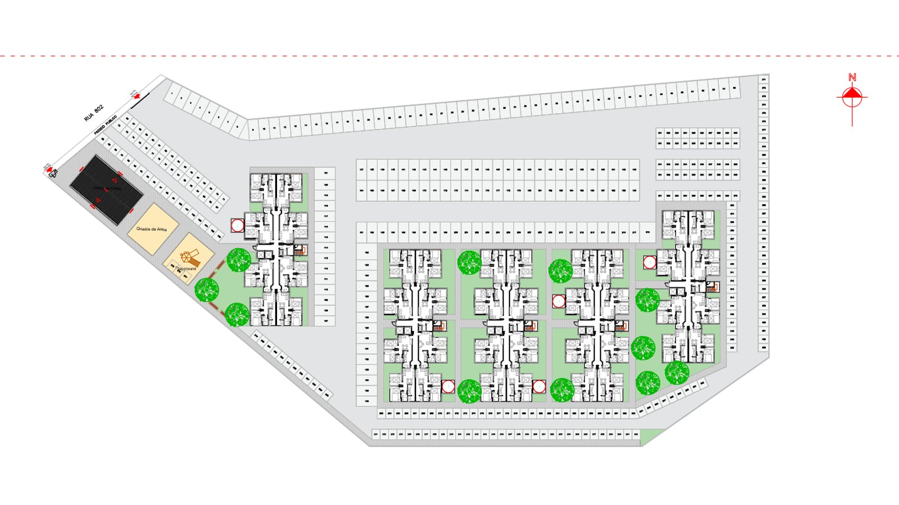

Itapema · Habitação
Itapema · HabitaçãoItapema abre inscrição para 90 casas do Minha Casa, Minha Vida, e o prazo é de 60 dias
A etapa da Faixa 1, que é a única com cadastro aberto neste momento.
São quatro áreas do Município, prédios de até 12 pavimentos e unidades das Faixas 2 e 3 do Minha Casa, Minha Vida. O cadastro das famílias interessadas ainda não abriu.
Em 30 segundos · Modo de Leitura, formato original Santa Informa
A Prefeitura de Itapema abriu a concorrência para construir 1.120 apartamentos em quatro terrenos do próprio Município.
É a Concorrência Eletrônica nº 03.009.2026, e ela escolhe a empresa, não o morador.
As áreas ficam no Casa Branca (400 e 320 unidades), no Sertão do Trombudo (240) e no Morretes (160).
As propostas técnicas vão até as 14h do dia 17 de novembro, pela plataforma Licitar Digital. A escolha é por melhor técnica.
Os prédios podem ter até 12 pavimentos e precisam ter elevador.
As unidades são das Faixas 2 e 3 do Minha Casa, Minha Vida, com renda de R$ 3.200,01 a R$ 9.600.
A entrada do Município é o terreno, e o valor dele pode virar subsídio na compra.
A inscrição das famílias para esses apartamentos ainda não está aberta. O cadastro que está aberto agora é o da Faixa 1, das 90 casas do Residencial Campo Verde.
Poder PúblicoPublicada em Redação Santa Informa

A Prefeitura de Itapema abriu a concorrência que vai escolher a empresa responsável por projetar e construir 1.120 apartamentos em quatro terrenos do próprio Município. É a Concorrência Eletrônica nº 03.009.2026, e a Prefeitura trata o conjunto como o maior projeto habitacional da história da cidade.
Duas são no Casa Branca: a Rua 802, com 400 unidades, e a Rua 708, com 320. As outras duas ficam no Sertão do Trombudo, na Rua 406H, com 240 unidades, e no Morretes, entre as ruas 430 e 428, com 160. Somando, dá as 1.120 moradias, espalhadas por regiões diferentes. O desenho é verticalizado: as edificações podem ter até 12 pavimentos e o edital exige elevador.
As unidades vão para as Faixas 2 e 3 do Minha Casa, Minha Vida e serão vendidas por financiamento habitacional. A Faixa 2 atende família com renda bruta mensal de R$ 3.200,01 a R$ 5 mil. A Faixa 3 vai de R$ 5.000,01 a R$ 9.600. Quem compra passa por um Sistema de Cadastro Habitacional e depois pela análise de crédito da Caixa Econômica Federal, feita caso a caso.
A participação da Prefeitura é o terreno. O prefeito Alexandre Xepa disse que o custo da terra é hoje um dos maiores entraves para esse tipo de empreendimento e que ceder as áreas cria condição para atrair construtora. O edital prevê que o valor correspondente ao terreno possa funcionar como subsídio na hora da compra. Conforme o enquadramento de cada família, esse desconto ainda pode se somar ao FGTS e a outros benefícios do programa.
Esse ponto merece ser repetido, porque já está confundindo gente. A concorrência de agora serve para escolher empresa. A inscrição das famílias interessadas nos 1.120 apartamentos ainda não está aberta, e a Prefeitura diz que vai divulgar o processo depois, pelos canais oficiais. O cadastro que está aberto neste momento é outro: o da Faixa 1, das 90 casas do Residencial Campo Verde, no Sertão do Trombudo.
As propostas técnicas podem ser entregues até as 14h do dia 17 de novembro, pela plataforma Licitar Digital. A abertura acontece no mesmo dia, às 14h01, e o critério de escolha é o de melhor técnica. Para entrar na disputa, a empresa precisa de análise de risco de crédito favorável e vigente na Caixa, da certificação PBQP-H e de experiência comprovada em projeto e execução de prédio habitacional.
O resumo de 30 segundos está no topo e a versão completa é o texto acima. Aqui ficam as três leituras da casa sobre o mesmo assunto.
Clara, a otimista
Terreno público virando moradia é das melhores coisas que uma prefeitura pode fazer com o que tem. Itapema tem terra e não tem casa que caiba no bolso de quem trabalha aqui. Colocar as quatro áreas na mesa resolve justamente a parte mais cara.
E repare na distribuição. Não jogaram tudo num canto só. Casa Branca, Sertão do Trombudo e Morretes, com blocos de tamanhos diferentes, é planejamento de quem pensou em cidade, e não só em número de unidade.
Seu Prudêncio, o criterioso
Merece atenção quem fica de fora. A Faixa 2 começa em R$ 3.200,01 de renda familiar, e o aperto do aluguel em Itapema aparece bem antes disso. Quem ganha menos continua dependendo das 90 casas da Faixa 1, que são 90 para uma cidade inteira. O projeto novo é grande, mas mira uma faixa que já tem alguma chance no mercado.
Vale acompanhar o calendário. A proposta só é aberta em 17 de novembro. Depois vem contratar, projetar, licenciar, aprovar e construir. Prédio de doze andares com elevador não sai em um ano, e a análise de crédito da Caixa é individual, o que costuma reprovar uma parte considerável dos interessados. O edital também não traz prazo de entrega, e prazo ausente é o dado que mais falta em obra habitacional.
Uma sugestão útil para quem já mira uma dessas unidades: comece a arrumar o nome na praça agora, porque a análise de crédito não perdoa restrição recente. Dito isso, o desenho está correto. Escolher por melhor técnica, e não por menor preço, é acerto em prédio de moradia popular, onde barato costuma sair caro na manutenção. E transformar o valor do terreno em subsídio é o jeito mais direto de o dinheiro público chegar na parcela da família.
Caco, o sarcástico
Itapema vai construir 1.120 apartamentos. Perto do que se paga de aluguel aqui, tem gente que já considerou morar dentro do carro com vista para o mar, que pelo menos é de graça.
O edital exige elevador em prédio de até doze andares. Alguém precisou escrever isso num documento oficial, o que diz muito sobre a experiência de todo mundo com escada de prédio.
E já avisando ao grupo do bairro: o cadastro não abriu. Não abriu ontem, não abriu hoje. Podem parar de encaminhar o áudio.
Fontes: Prefeitura de Itapema, publicação de 24 de agosto de 2026, com o número da Concorrência Eletrônica 03.009.2026, as quatro áreas e o número de unidades de cada uma, o prazo de 17 de novembro, o critério de melhor técnica, o limite de 12 pavimentos, as faixas de renda do Minha Casa, Minha Vida, as exigências de PBQP-H e de análise de crédito na Caixa, o aviso de que o cadastro das famílias ainda não abriu e o balanço de 180 títulos de propriedade entregues. Sobre a etapa da Faixa 1, veja a matéria das 90 casas.
Itapema · HabitaçãoA etapa da Faixa 1, que é a única com cadastro aberto neste momento.
 Itapema · Serviço
Itapema · ServiçoComo funciona o cadastro que dá acesso à fila da habitação na cidade.
 Itapema · Infraestrutura
Itapema · InfraestruturaO bairro que recebe 240 dos novos apartamentos e as 90 casas da Faixa 1.